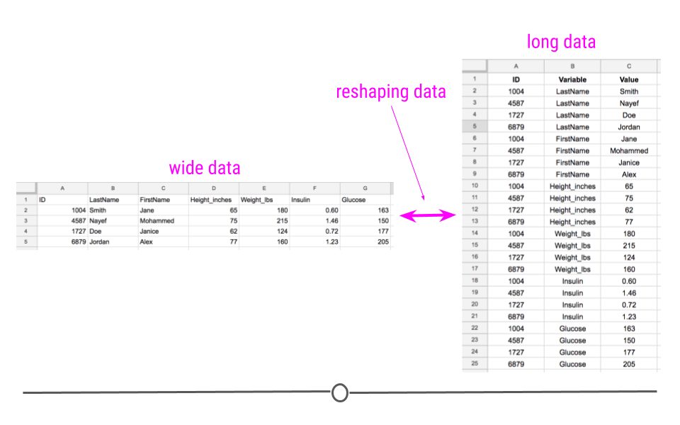

Módulo 3: Introducción al tidyverse
Antes de comenzar!
Tipos de tablas
- Existen básicamente dos tipos de tablas de datos de acuerdo a su formato: ancho (wide format) y largo (long format)

Datos ordenados (Tidy data)
Cuando llevamos registro de datos es muy común usar tablas de Excel.
Por la libertad que tenemos en este software, es fácil el dejarnos llevar por prácticas que luego nos causarán dolores de cabeza.
Por ello me parece importante el mencionar unas cuantas sugerencias para llevar el registro de datos:
Consistencia
Escoge buenos nombres
Escribir fechas en formato ISO 8601
Evitar filas/celdas vacías donde no son necesarias
Pon una sola cosa a la vez
Evita usar resaltador/colores de fuentes
La mayor parte de ejemplos aquí tomados provienen de Data organization in Spreadsheets y las figuras del curso Tidyverse Skills for Data Science{target=“_blank”.
Consistencia

Escoge buenos nombres
Como ya habíamos mencionado, R puede presentar problemas con el nombre que le asignemos a nuestras columnas (“variables”):
Si comienza con un número, antepondrá
X.al nombre de la columnaSi tiene caracteres especiales, puede dar problemas en el espaciado o de lectura
Adicionalmente, podemos mencionar las siguientes recomendaciones
| Esto está bien | Evita esto! | |
|---|---|---|
| Espacios extras | "masculino" |
"masculino " |
| Usa guiones bajos en lugar de espacios vacíos | cultivo_control |
cultivo control |
| Usa nombres informativos | cultivo_control |
C1 |
Fechas en formato ISO 8601
Ya habíamos mencionado anteriormente que dar formato a fechas puede resultar difícil (aunque no imposible).
Como parte de la consistencia, es recomendable que cuando trabajamos con fechas, registrarlas como “YYYY-MM-DD”.
Este formato es conocido como ISO 8601 y es reconocido sin problema por R (y otros lenguajes).
Dependiendo de la configuración de nuestro ordenador, a veces fechas en Excel como “14-Feb-23” pueden ser reconocidas automáticamente.
Evitar filas/celdas vacías
Una sola cosa a la vez
Evita resaltar/cambiar colores
Ejemplos de tablas “problemáticas”
Ejemplos de tablas “problemáticas”

Principios de datos ordenados
Propuestos por Hadley Wickham en su artículo titulado Tidy Data.
Son sugerencias que Wickham formula para harmonizar la manera de registrar datos y su posterior procesamiento en modelos de ciencias de datos (discutiblemente estas sugerencias ya existían inherentemente en el lenguaje SQL).
Tiene como premisa el arreglo de los datos en formato ancho (o también conocido como rectangular).
Las tablas rectangulares nacen de nuestra predisposición a registrar datos de esta manera.
Principio 1: Una columna por variable
Principio 2: Una observación por fila
Principio 3: Una hoja de datos por tipo de datos
Principio 4: Una variable con un identificador
El tidyverse
Introducción
tidyverse es una colección de paquetes de R diseñados para la ciencia de datos creada originalmente por Wickham.
Para su instalación usaremos la sintaxis que ya hemos aprendido en el módulo 1 (
install.packages("tidyverse")).Al momento, comprende 8 paquetes. De estos los que más usaremos son:
dplyr: conjunto de funciones para arreglo y “manipulación” de datosggplot2: el paquete de ploteo por excelencia de R.

Operador de cascada (pipe operator)
Antes de comenzar directamente con
dplyr, daremos un vistazo al operador de cascada:%>%.Entendamos a
%>%como la palabra “entonces”. En términos sencillos, es algo como: “Tengo harina%>%hago pan”En lenguaje R, esto se interpreta como si tuvieramos un objeto
Asobre el cual deseamos aplicar una funciónB. Esto se vería como:B(A)Alternativamente, podemos expresarlo como
A %>% B.Ahora supongamos que tengo un objeto sobre el cual quiero llevar a cabo más funciones en una determinada secuencia, quiero sobre
Ahacer las funcionesB,C,D.En base R, esto se vería cómo
D(C(B(A)))O, alternativamente
A %>% B %>% C %>% DNoten como el uso
%>%nos facilita la interpretación de la secuencia de acciones.
Operador de cascada nativo de R
A partir de la versión de R 4.1.0, R tiene un operador de cascada nativo:
|>.Este es parte del paquete
magrittr.En principio no existe diferencia entre
%>%y|>.Un incoveniente que se puede presentar es el utilizar el operador nativo en combinación con tutoriales de
dplyrcreados en versiones de R anteriores a 4.1.0.De aquí en adelante, usaremos el operador de
dplyr.
Operaciones básicas con dplyr
Filtrando filas
Aquí, vamos a utilizar la tabla de datos msleep contenida en ggplot2.
Filtrando filas
Aquí, vamos a utilizar la tabla de datos msleep contenida en ggplot2.
# A tibble: 6 × 11
name genus vore order conservation sleep_total sleep_rem sleep_cycle awake
<chr> <chr> <chr> <chr> <chr> <dbl> <dbl> <dbl> <dbl>
1 Cheetah Acin… carni Carn… lc 12.1 NA NA 11.9
2 Owl mo… Aotus omni Prim… <NA> 17 1.8 NA 7
3 Mounta… Aplo… herbi Rode… nt 14.4 2.4 NA 9.6
4 Greate… Blar… omni Sori… lc 14.9 2.3 0.133 9.1
5 Cow Bos herbi Arti… domesticated 4 0.7 0.667 20
6 Three-… Brad… herbi Pilo… <NA> 14.4 2.2 0.767 9.6
# ℹ 2 more variables: brainwt <dbl>, bodywt <dbl>Filtrando filas
Aquí, vamos a utilizar la tabla de datos msleep contenida en ggplot2.
Supongamos que solo estamos interesados en las observaciones del orden “Primates”:
# A tibble: 12 × 11
name genus vore order conservation sleep_total sleep_rem sleep_cycle awake
<chr> <chr> <chr> <chr> <chr> <dbl> <dbl> <dbl> <dbl>
1 Owl m… Aotus omni Prim… <NA> 17 1.8 NA 7
2 Grivet Cerc… omni Prim… lc 10 0.7 NA 14
3 Patas… Eryt… omni Prim… lc 10.9 1.1 NA 13.1
4 Galago Gala… omni Prim… <NA> 9.8 1.1 0.55 14.2
5 Human Homo omni Prim… <NA> 8 1.9 1.5 16
6 Mongo… Lemur herbi Prim… vu 9.5 0.9 NA 14.5
7 Macaq… Maca… omni Prim… <NA> 10.1 1.2 0.75 13.9
8 Slow … Nyct… carni Prim… <NA> 11 NA NA 13
9 Chimp… Pan omni Prim… <NA> 9.7 1.4 1.42 14.3
10 Baboon Papio omni Prim… <NA> 9.4 1 0.667 14.6
11 Potto Pero… omni Prim… lc 11 NA NA 13
12 Squir… Saim… omni Prim… <NA> 9.6 1.4 NA 14.4
# ℹ 2 more variables: brainwt <dbl>, bodywt <dbl>Filtrando filas
Ya que hemos filtrado a las observaciones de los “Primates”, ¿qué tal si estuviéramos interesados solamente en aquellas que las horas totales de sueño son mayores o iguales a 10?
Filtrando filas
Ya que hemos filtrado a las observaciones de los “Primates”, ¿qué tal si estuviéramos interesados solamente en aquellas que las horas totales de sueño son mayores o iguales a 10?
# A tibble: 6 × 11
name genus vore order conservation sleep_total sleep_rem sleep_cycle awake
<chr> <chr> <chr> <chr> <chr> <dbl> <dbl> <dbl> <dbl>
1 Owl mo… Aotus omni Prim… <NA> 17 1.8 NA 7
2 Grivet Cerc… omni Prim… lc 10 0.7 NA 14
3 Patas … Eryt… omni Prim… lc 10.9 1.1 NA 13.1
4 Macaque Maca… omni Prim… <NA> 10.1 1.2 0.75 13.9
5 Slow l… Nyct… carni Prim… <NA> 11 NA NA 13
6 Potto Pero… omni Prim… lc 11 NA NA 13
# ℹ 2 more variables: brainwt <dbl>, bodywt <dbl>Antes de countinuar: Tibbles
Cómo te habras dado cuenta, en el prompt de R vemos que la tabla es llamada
# A tibble.Un
tibblees una version de tablas de datos generada por el paquete del mismo nombre que a su vez es parte deltidyverse.Las diferencias con las clásicas tablas de datos son:
Por default, al llamar un
tibble, se imprimen únicamente las primeras diez filas de la tabla.Los
tibblesson más sensibles a errores del programador. Esto es una ventaja al ofrecer un ambiente menos propenso a errores.Para operaciones complejas (sobre todo en tablas muy grandes) como unir varias tablas, crear nuevas variables, etc. los
tibblesson más eficientes.
Seleccionando columnas
En un
tibblese aplican también las reglas de indexación que vimos anteriormente al igual que el operando$.Sin embargo, implementar este tipo de sintaxis en una cascada es difícil (aunque no imposible).
En el caso de seleccionar columnas, tenemos la función
selectdedplyr
Seleccionando columnas
En un
tibblese aplican también las reglas de indexación que vimos anteriormente al igual que el operando$.Sin embargo, implementar este tipo de sintaxis en una cascada es difícil (aunque no imposible).
En el caso de seleccionar columnas, tenemos la función
selectdedplyr
msleep %>%
filter(order == "Primates", sleep_total >= 10) %>%
select(name, sleep_total, sleep_rem, sleep_cycle)# A tibble: 6 × 4
name sleep_total sleep_rem sleep_cycle
<chr> <dbl> <dbl> <dbl>
1 Owl monkey 17 1.8 NA
2 Grivet 10 0.7 NA
3 Patas monkey 10.9 1.1 NA
4 Macaque 10.1 1.2 0.75
5 Slow loris 11 NA NA
6 Potto 11 NA NA Cambiando el nombre a columnas
Cambiando el nombre a columnas
msleep %>%
filter(order == "Primates", sleep_total >= 10) %>%
select(name, total = sleep_total, rem = sleep_rem, cycle = sleep_cycle)# A tibble: 6 × 4
name total rem cycle
<chr> <dbl> <dbl> <dbl>
1 Owl monkey 17 1.8 NA
2 Grivet 10 0.7 NA
3 Patas monkey 10.9 1.1 NA
4 Macaque 10.1 1.2 0.75
5 Slow loris 11 NA NA
6 Potto 11 NA NA Reordenando columnas
Reordenando columnas
msleep %>%
filter(order == "Primates", sleep_total >= 10) %>%
select(name, sleep_rem, sleep_cycle, sleep_total)# A tibble: 6 × 4
name sleep_rem sleep_cycle sleep_total
<chr> <dbl> <dbl> <dbl>
1 Owl monkey 1.8 NA 17
2 Grivet 0.7 NA 10
3 Patas monkey 1.1 NA 10.9
4 Macaque 1.2 0.75 10.1
5 Slow loris NA NA 11
6 Potto NA NA 11 Reordenando filas
Variable numérica
Reordenando filas
Variable numérica
msleep %>%
filter(order == "Primates", sleep_total >= 10) %>%
select(name, sleep_rem, sleep_cycle, sleep_total) %>%
arrange(sleep_total)# A tibble: 6 × 4
name sleep_rem sleep_cycle sleep_total
<chr> <dbl> <dbl> <dbl>
1 Grivet 0.7 NA 10
2 Macaque 1.2 0.75 10.1
3 Patas monkey 1.1 NA 10.9
4 Slow loris NA NA 11
5 Potto NA NA 11
6 Owl monkey 1.8 NA 17 Reordenando filas
Variable numérica en orden descendente
msleep %>%
filter(order == "Primates", sleep_total >= 10) %>%
select(name, sleep_rem, sleep_cycle, sleep_total) %>%
arrange(desc(sleep_total))# A tibble: 6 × 4
name sleep_rem sleep_cycle sleep_total
<chr> <dbl> <dbl> <dbl>
1 Owl monkey 1.8 NA 17
2 Slow loris NA NA 11
3 Potto NA NA 11
4 Patas monkey 1.1 NA 10.9
5 Macaque 1.2 0.75 10.1
6 Grivet 0.7 NA 10 Reordenando filas
Variable categórica
msleep %>%
filter(order == "Primates", sleep_total >= 10) %>%
select(name, sleep_rem, sleep_cycle, sleep_total) %>%
arrange(name)# A tibble: 6 × 4
name sleep_rem sleep_cycle sleep_total
<chr> <dbl> <dbl> <dbl>
1 Grivet 0.7 NA 10
2 Macaque 1.2 0.75 10.1
3 Owl monkey 1.8 NA 17
4 Patas monkey 1.1 NA 10.9
5 Potto NA NA 11
6 Slow loris NA NA 11 Reordenando filas
Variable categórica y numérica
msleep %>%
filter(order == "Primates", sleep_total >= 10) %>%
select(name, sleep_rem, sleep_cycle, sleep_total) %>%
arrange(desc(name), sleep_cycle)# A tibble: 6 × 4
name sleep_rem sleep_cycle sleep_total
<chr> <dbl> <dbl> <dbl>
1 Slow loris NA NA 11
2 Potto NA NA 11
3 Patas monkey 1.1 NA 10.9
4 Owl monkey 1.8 NA 17
5 Macaque 1.2 0.75 10.1
6 Grivet 0.7 NA 10 Creando nuevas columnas
Creando nuevas columnas
msleep %>%
filter(order == "Primates", sleep_total >= 10) %>%
select(name, sleep_rem, sleep_cycle, sleep_total) %>%
arrange(desc(name), sleep_cycle) %>%
mutate(sleep_total_min = sleep_total * 60)# A tibble: 6 × 5
name sleep_rem sleep_cycle sleep_total sleep_total_min
<chr> <dbl> <dbl> <dbl> <dbl>
1 Slow loris NA NA 11 660
2 Potto NA NA 11 660
3 Patas monkey 1.1 NA 10.9 654
4 Owl monkey 1.8 NA 17 1020
5 Macaque 1.2 0.75 10.1 606
6 Grivet 0.7 NA 10 600Dividiendo columnas
Idealmente, deberíamos tratar de contar con un solo tipo de información por columna (“Una sola cosa a la vez”)
Sin embargo, sobretodo cuando recibimos datos de terceros, nos podemos encontrar con este problema.
Si el registro de datos fue consistente, es posible separarlo fácilmente usando la función
separatedetidyrtidyres otro paquete deltidyverseque ofrece funciones complementarias para manejo de tablas.Se diferencia de
dplyren que sus funciones están más enfocadas en brindar transformaciones de formatos de tablas.Para ilustrar su uso, supongamos que dos variables de la tabla
msleepfueron combinadas en su registro:
Dividiendo columnas
Idealmente, deberíamos tratar de contar con un solo tipo de información por columna (“Una sola cosa a la vez”, slide #9)
Sin embargo, sobretodo cuando recibimos datos de terceros, nos podemos encontrar con este problema.
Si el registro de datos fue consistente, es posible separarlo fácilmente usando la función
separatedetidyrtidyres otro paquete deltidyverseque ofrece funciones complementarias para manejo de tablas.Se diferencia de
dplyren que sus funciones están más enfocadas en brindar transformaciones de formatos de tablas.Para ilustrar su uso, supongamos que dos variables de la tabla
msleepfueron combinadas en su registro:
ej_separate <- msleep
ej_separate$genus_vore <- paste0(ej_separate$genus, "-", ej_separate$vore)
ej_separate <- ej_separate[, c(1, 12)]
head(ej_separate)# A tibble: 6 × 2
name genus_vore
<chr> <chr>
1 Cheetah Acinonyx-carni
2 Owl monkey Aotus-omni
3 Mountain beaver Aplodontia-herbi
4 Greater short-tailed shrew Blarina-omni
5 Cow Bos-herbi
6 Three-toed sloth Bradypus-herbi Dividiendo columnas
# A tibble: 6 × 2
name genus_vore
<chr> <chr>
1 Cheetah Acinonyx-carni
2 Owl monkey Aotus-omni
3 Mountain beaver Aplodontia-herbi
4 Greater short-tailed shrew Blarina-omni
5 Cow Bos-herbi
6 Three-toed sloth Bradypus-herbi - En esta variable
genus_vorevemos que la información de dos cosas se encuentran separadas por el caracter-. Veamos entonces como podemos separarlas en dos columnas distintas con la ayuda detidyr:
Dividiendo columnas
# A tibble: 6 × 2
name genus_vore
<chr> <chr>
1 Cheetah Acinonyx-carni
2 Owl monkey Aotus-omni
3 Mountain beaver Aplodontia-herbi
4 Greater short-tailed shrew Blarina-omni
5 Cow Bos-herbi
6 Three-toed sloth Bradypus-herbi - En esta variable
genus_vorevemos que la información de dos cosas se encuentran separadas por el caracter-. Veamos entonces como podemos separarlas en dos columnas distintas con la ayuda detidyr:
# A tibble: 83 × 3
name genus vore
<chr> <chr> <chr>
1 Cheetah Acinonyx carni
2 Owl monkey Aotus omni
3 Mountain beaver Aplodontia herbi
4 Greater short-tailed shrew Blarina omni
5 Cow Bos herbi
6 Three-toed sloth Bradypus herbi
7 Northern fur seal Callorhinus carni
8 Vesper mouse Calomys NA
9 Dog Canis carni
10 Roe deer Capreolus herbi
# ℹ 73 more rowsCombinando columnas
Combinando columnas
ej_separate %>%
separate(`genus_vore`,
into = c("genus", "vore"), sep = "-") %>%
unite(new_genus_vore, genus, vore, sep = "_")# A tibble: 83 × 2
name new_genus_vore
<chr> <chr>
1 Cheetah Acinonyx_carni
2 Owl monkey Aotus_omni
3 Mountain beaver Aplodontia_herbi
4 Greater short-tailed shrew Blarina_omni
5 Cow Bos_herbi
6 Three-toed sloth Bradypus_herbi
7 Northern fur seal Callorhinus_carni
8 Vesper mouse Calomys_NA
9 Dog Canis_carni
10 Roe deer Capreolus_herbi
# ℹ 73 more rowsResumiendo datos
Una de las funcionalidades más importantes de
dplyres el poder resumir datos (o en otras palabras el aplicar funciones sobre variables en la tabla).Para ello usamos la función
summarise(osummarize).
Resumiendo datos
Una de las funcionalidades más importantes de
dplyres el poder resumir datos (o en otras palabras el aplicar funciones sobre variables en la tabla).Para ello usamos la función
summarise(osummarize).
# A tibble: 1 × 1
conteo
<int>
1 12- Filtrar por cada uno de los niveles de
orderes ineficiente y tedioso.
- En su lugar usaremos
group_by
Resumiendo datos
Una de las funcionalidades más importantes de
dplyres el poder resumir datos (o en otras palabras el aplicar funciones sobre variables en la tabla).Para ello usamos la función
summarise(osummarize).
# A tibble: 1 × 1
conteo
<int>
1 12Filtrar por cada uno de los niveles de
orderes ineficiente y tedioso.En su lugar usaremos
group_by
# A tibble: 19 × 2
order conteo
<chr> <int>
1 Afrosoricida 1
2 Artiodactyla 6
3 Carnivora 12
4 Cetacea 3
5 Chiroptera 2
6 Cingulata 2
7 Didelphimorphia 2
8 Diprotodontia 2
9 Erinaceomorpha 2
10 Hyracoidea 3
11 Lagomorpha 1
12 Monotremata 1
13 Perissodactyla 3
14 Pilosa 1
15 Primates 12
16 Proboscidea 2
17 Rodentia 22
18 Scandentia 1
19 Soricomorpha 5Resumiendo datos
- En
summarisepodemos usar todas las operaciones estadísticas básicas de base, así como también funciones de paquetes externos.
library(modeest)
msleep %>%
group_by(order) %>%
summarise(conteo = n(),
media = mean(sleep_total),
desv.est. = sd(sleep_total),
minimo = min(sleep_total),
maximo = max(sleep_total),
moda = mlv(sleep_total, method = "hsm", na.rm = T),
q1 = quantile(sleep_total, probs = 0.25),
mediana = quantile(sleep_total, probs = 0.5),
q3 = quantile(sleep_total, probs = 0.75))Resumiendo datos
- En
summarisepodemos usar todas las operaciones estadísticas básicas
library(modeest)
msleep %>%
group_by(order) %>%
summarise(conteo = n(),
media = mean(sleep_total),
desv.est. = sd(sleep_total),
minimo = min(sleep_total),
maximo = max(sleep_total),
moda = mlv(sleep_total, method = "hsm"),
q1 = quantile(sleep_total, probs = 0.25),
mediana = quantile(sleep_total, probs = 0.5),
q3 = quantile(sleep_total, probs = 0.75))# A tibble: 19 × 10
order conteo media desv.est. minimo maximo moda q1 mediana q3
<chr> <int> <dbl> <dbl> <dbl> <dbl> <dbl> <dbl> <dbl> <dbl>
1 Afrosoricida 1 15.6 NA 15.6 15.6 15.6 15.6 15.6 15.6
2 Artiodactyla 6 4.52 2.51 1.9 9.1 3.9 3.2 3.9 4.97
3 Carnivora 12 10.1 3.50 3.5 15.8 12.5 8.1 10.2 12.5
4 Cetacea 3 4.5 1.57 2.7 5.6 5.4 3.95 5.2 5.4
5 Chiroptera 2 19.8 0.141 19.7 19.9 19.8 19.8 19.8 19.8
6 Cingulata 2 17.8 0.495 17.4 18.1 17.8 17.6 17.8 17.9
7 Didelphimorph… 2 18.7 0.990 18 19.4 18.7 18.4 18.7 19.0
8 Diprotodontia 2 12.4 1.84 11.1 13.7 12.4 11.8 12.4 13.0
9 Erinaceomorpha 2 10.2 0.141 10.1 10.3 10.2 10.1 10.2 10.2
10 Hyracoidea 3 5.67 0.551 5.3 6.3 5.35 5.35 5.4 5.85
11 Lagomorpha 1 8.4 NA 8.4 8.4 8.4 8.4 8.4 8.4
12 Monotremata 1 8.6 NA 8.6 8.6 8.6 8.6 8.6 8.6
13 Perissodactyla 3 3.47 0.814 2.9 4.4 3 3 3.1 3.75
14 Pilosa 1 14.4 NA 14.4 14.4 14.4 14.4 14.4 14.4
15 Primates 12 10.5 2.21 8 17 9.5 9.57 9.9 10.9
16 Proboscidea 2 3.6 0.424 3.3 3.9 3.6 3.45 3.6 3.75
17 Rodentia 22 12.5 2.81 7 16.6 14.4 10.8 12.9 14.5
18 Scandentia 1 8.9 NA 8.9 8.9 8.9 8.9 8.9 8.9
19 Soricomorpha 5 11.1 2.70 8.4 14.9 8.75 9.1 10.3 12.8 Autoevaluación
|
V/F |
|
V/F |
|
V/F |
|
V/F |
|
V/F |
Autoevaluación
|
V/F |
|
V/F |
|
V/F |
|
V/F |
Importación y exportación de datos
Introducción
Existen varias funciones base para importar datos (
read.table,read.csv,read.csv2y más).Una limitación de estas es que no son compatibles con el formato más usado: Excel.
Dentro del
tidyversecontamos con los paquetesreadryreadxlque ofrecen funciones para importar tablas de archivos en varios formatos, incluyendo Excel.Las extensiones de tablas más comunes son:
.csv: comma separated values, o valores separados por comas (aunque las comas no son un requisito)
.txt: archivos de texto (como los producidos por notepad en Windows)
.xlsx: archivos de Excel
R también es capaz de importar tablas de otro tipo de software, por ejemplo SAS, SPSS o minitab. Pero para ello requiere de otros paquetes fuera del
tidyverse.
¡Manos a la obra!
Crea un proyecto en R (como ya lo vimos en el módulo anterior).
Crea dentro de este proyecto una carpeta de nombre “datos”
Ingresa a la sección de “Materiales y recursos” del curso y descarga el archivo comprimido datos.zip.
Extrae los archivos del .zip en tu carpeta de “datos”.
Importando archivos .csv

Importando archivos .csv
- Para esta sección utilizaremos como ejemplo los datos del Prof. Touchon acerca de una investigación de recursos por depredación en ranas arbóreas de ojos rojos en Panamá.

Importando archivos .csv
R base
Importando archivos .csv
R base
Block Tank.Unique Pred Hatch Res Age.DPO Age.FromEmergence SVL.initial
1 1 1 NL L Hi 47.19149 13.19149 19.42553
2 1 2 C E Hi 45.38095 11.38095 18.40476
3 1 3 C L Hi 53.82222 19.82222 18.92667
4 1 4 L L Lo 56.92308 22.92308 18.82692
5 1 5 NL E Hi 64.75000 30.75000 19.71500
6 1 6 L E Hi 44.00000 10.00000 21.47500
Tail.initial SVL.final Mass.final Resorb.days
1 4.834043 19.65957 0.4178723 3.489362
2 5.369048 19.00952 0.3821429 3.785714
3 4.802222 19.12000 0.4117778 3.511111
4 4.634615 19.11538 0.3823077 3.653846
5 5.435000 20.11000 0.4865000 4.225000
6 7.837500 21.97500 0.7375000 5.000000Importando archivos .csv
tidyverse
Importando archivos .csv
tidyverse
# A tibble: 78 × 12
Block Tank.Unique Pred Hatch Res Age.DPO Age.FromEmergence SVL.initial
<dbl> <dbl> <chr> <chr> <chr> <dbl> <dbl> <dbl>
1 1 1 NL L Hi 47.2 13.2 19.4
2 1 2 C E Hi 45.4 11.4 18.4
3 1 3 C L Hi 53.8 19.8 18.9
4 1 4 L L Lo 56.9 22.9 18.8
5 1 5 NL E Hi 64.8 30.8 19.7
6 1 6 L E Hi 44 10 21.5
7 1 7 NL L Lo 67.7 33.7 19.0
8 1 8 C E Lo 95.9 61.9 17.9
9 1 9 L L Hi 45.2 11.2 21.3
10 1 10 C L Lo 64.9 30.9 18.9
# ℹ 68 more rows
# ℹ 4 more variables: Tail.initial <dbl>, SVL.final <dbl>, Mass.final <dbl>,
# Resorb.days <dbl>Antes de continuar…
Tanto las funciones
read.csvcomoread_csvtienen por default la coma (,) como separador de las columnas.En caso de encontrarte con un documento .csv donde otro separador es usado, usa las funciones de ayuda para ver la manera correcta de especificar el separador.
Para importar archivos .txt se usan de manera similar las funciones
read.tableyread_tablede base R ytidyverse, respectivamente.
Importando archivos de Excel
- Usaremos el archivo rotXLS.xlsx y el paquete
readxl
Importando archivos de Excel
- Usaremos el archivo rotXLS.xlsx y el paquete
readxl
# A tibble: 1,043 × 12
date cases week incidence FM RSK SHK_TAG PM TMK
<dttm> <dbl> <dbl> <dbl> <dbl> <dbl> <dbl> <dbl> <dbl>
1 2001-01-07 00:00:00 0 14 0 3.35 0 0 1003. 3.86
2 2001-01-14 00:00:00 8 15 0.23 1.65 0 0 1029. -2.35
3 2001-01-21 00:00:00 12 16 0.34 3.15 0.0545 0.2 1018. -0.364
4 2001-01-28 00:00:00 59 17 1.69 5.98 3.75 0 992. 2.47
5 2001-02-04 00:00:00 55 18 1.57 5.88 6.39 3.3 999. -4.92
6 2001-02-11 00:00:00 76 19 2.17 4.68 0.218 0 1024. 6.29
7 2001-02-18 00:00:00 92 20 2.63 5.18 0.00909 0 1023. 2.88
8 2001-02-25 00:00:00 87 21 2.49 3.92 0.0545 11.2 1000. -2.49
9 2001-03-04 00:00:00 103 22 2.95 3.72 3.37 2.3 991. -0.109
10 2001-03-11 00:00:00 110 23 3.15 3.48 0.664 0 998. 9.65
# ℹ 1,033 more rows
# ℹ 3 more variables: TXK <dbl>, TNK <dbl>, UPM <dbl>- En el caso de archivos de Excel con varias páginas, podemos especificar qué página importar con el argumento
sheetdentro de la funciónread_excel.
Exportación de datos
Como habíamos mencionado, una buena práctica en la organización de nuestros proyectos es tener una buena estructura de los directorios dentro de los mismos.
Una de estas es el crear nuevas carpetas donde guardemos los outputs de nuestros análisis.
Crearemos entonces, una carpeta de nombre “outputs” y exportaremos ahí los datos a continuación.
Exportación de datos
Archivos .csv
Exportación de datos
Archivos .xlsx
readxlno tiene funcionalidad para exportar tablas con extensión .xlsx
Antes de continuar…
Es importante mencionar las formas en las que podemos indicarle a R los paths de los archivos que contienen nuestros datos:
Crearlos manualmente
Directamente dentro de R
Copiarlos desde el explorador de Windows
Para usuarios de Windows (esto no sucede con sistemas operativos MacOS ni basados en Unix), la manera en que los subdirectorios están separados es con
\.\es un caracter especial que puede producir errores dentro de R, por ello, si usamos la última opción listada, debemos cambiarlos por/
Operaciones con tablas de datos
Introducción
Una destreza importantísima en el análisis de datos es el saber manejar tablas:
Los datos no siempre están organizados de la manera que desearíamos.
Dependiendo de las funciones a usar, necesitamos hacer conversiones entre formatos (de largo a ancho o viceversa). Por ejemplo, el paquete
ggplot2funciona generalmente con tablas en formato largo.Tablas organizadas en formato largo son de más fácil acceso para tareas iterativas (computacionalmente más eficientes).
Nos enfocaremos en operaciones básicas con tablas de datos.
Todas las transformaciones que veremos aquí, es posible realizarlas con R base. Sin embargo, nos enfocaremos en el uso del
tidyversepuesto que su sintaxis es más intuitiva.
Transformación de formatos
Transformación de formatos
De formato ancho a largo
- Utilizaremos la función
pivot_longerdel paquetetidyrcon la tabla de baseair_quality
Transformación de formatos
De formato ancho a largo
- Utilizaremos la función
pivot_longerdel paquetetidyrcon la tabla de baseair_quality
Transformación de formatos
De formato ancho a largo
Utilizaremos la función
pivot_longerdel paquetetidyrcon la tabla de baseair_qualityPodemos asignar nombres.
Transformación de formatos
De formato ancho a largo
Utilizaremos la función
pivot_longerdel paquetetidyrcon la tabla de baseair_qualityPodemos asignar nombres.
Mantener columnas en la transformación.
tabla_larga <- airquality %>%
pivot_longer(c(Ozone, Solar.R, Wind, Temp),
names_to = "variable", values_to = "valores")
tabla_larga# A tibble: 612 × 4
Month Day variable valores
<int> <int> <chr> <dbl>
1 5 1 Ozone 41
2 5 1 Solar.R 190
3 5 1 Wind 7.4
4 5 1 Temp 67
5 5 2 Ozone 36
6 5 2 Solar.R 118
7 5 2 Wind 8
8 5 2 Temp 72
9 5 3 Ozone 12
10 5 3 Solar.R 149
# ℹ 602 more rowsTransformación de formatos
De formato largo a ancho
- Utilizaremos la función
pivot_wider
Transformación de formatos
De formato largo a ancho
- Utilizaremos la función
pivot_wider
tabla_ancha <- tabla_larga %>%
pivot_wider(names_from = "variable",
values_from = "valores")
tabla_ancha# A tibble: 153 × 6
Month Day Ozone Solar.R Wind Temp
<int> <int> <dbl> <dbl> <dbl> <dbl>
1 5 1 41 190 7.4 67
2 5 2 36 118 8 72
3 5 3 12 149 12.6 74
4 5 4 18 313 11.5 62
5 5 5 NA NA 14.3 56
6 5 6 28 NA 14.9 66
7 5 7 23 299 8.6 65
8 5 8 19 99 13.8 59
9 5 9 8 19 20.1 61
10 5 10 NA 194 8.6 69
# ℹ 143 more rowsAutoevaluación
|
a) Medidas de calidad de aire en Nueva York b) Medidas de contaminación de aire c) Medidas de presión atmosférica en UK |
|
a) Da igual, no es necesario b) Puede provocar errores porque c) Solo es necesario en Windows |
|
a) El archivo .csv creado contendrá una columna extra indicando el número de fila b) El separador de columnas será el punto y coma en lugar de la coma c) No pasa nada |
Autoevaluación
mtcars es una tabla de base R.
|
V/F |
En el siguiente código:
|
V/F |
|
a) Cambiando los nombres de las columnas de b) Extrayendo los nombres de las filas de c) Creando una nueva variable con los nombres de las marcas de autos |
|
a) Transformando de formato largo a ancho b) Transformando de formato ancho a largo c) Preparando la tabla para exportar |
|
a) Que estamos borrando la columna “marca” de b) Que excluya “marca” del pivot c) Ninguna de las anteriores |
Funciones y librerías en esta sesión
Funciones
headnos muestra las primeras 10 filas de una tabla de datos.paste0permite combinar dos o más elementos en una cadena de caracteres sin espacio entre ellos.minymaxencuentran los valores mínimo y máximo de un objeto.sumcalcula la suma de los elementos de un objeto.setwddetermina el directorio de trabajo para la sesión de R.row.namesdevuelve los nombres de las filas de una tabla en forma de un objeto (vector).
Librerías
dplyr, parte deltidyverse.%>%operador de cascada.filternos ayuda a filtrar filas.selectnos ayuda a seleccionar columnas.arrangeordena en una variable (alfabética o numéricamente).descdetermina si el orden debe ser descendente.mutatesirve para crear una nueva columna en untibble.nfunción que devuelve el tamaño (conteo) de una variable.group_byagrupa una variable en tantos grupos como niveles posea la variable.
tidyr, parte deltidyverse.separatesirve para separar una columna en otras más si es que existe una expresión regular.unitehace lo contrario aseparate.pivot_longertransforma tablas de formato ancho a largo.pivot_widertransofrma tablas de formato largo a ancho.
readr, parte deltidyverseread_csvequivalente aread.csvde R base, importa tablas de extensión .csv.
readxl, parte deltidyverseread_exceles la función para importar tablas de Excel
writexles un paquete que ofrece funcionalidades para trabajar con archivos de Excel.write_xlsxexporta tablas de datos de R a extensión .xlsx.